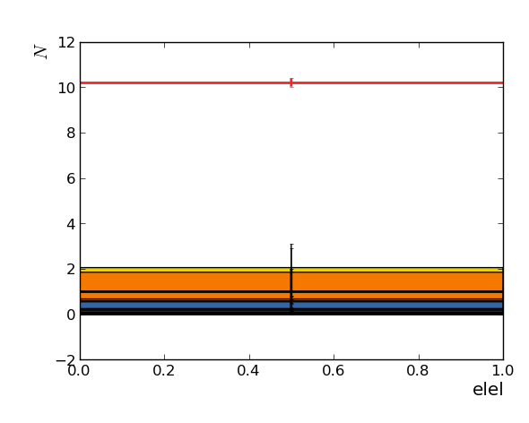
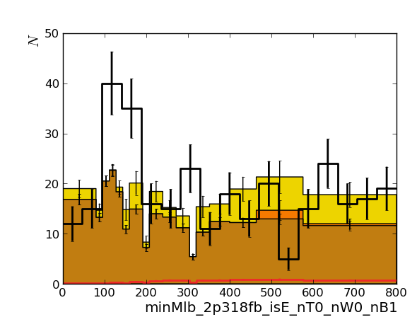
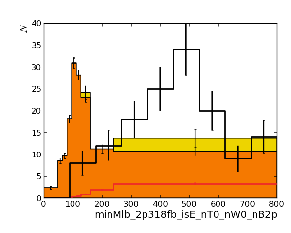
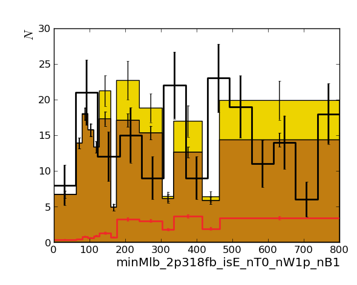
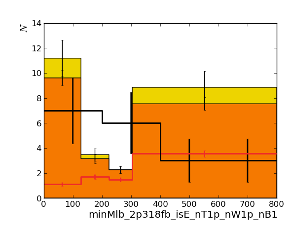
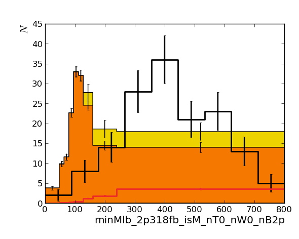
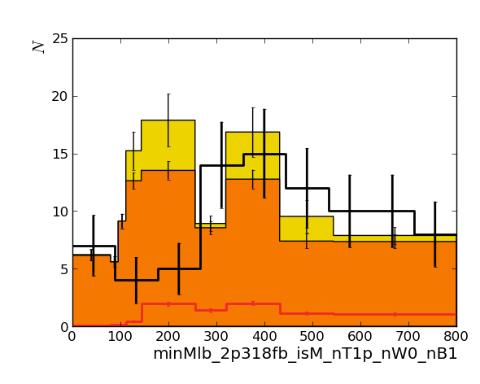

Hint: click on top-level headers to toggle visibility of that section.
Observables (xmin, xmax, nbins):
- elel (0, 1, 1)
- elmu (0, 1, 1)
- minMlb_2p318fb_isE_nT0_nW0_nB1 (0, 800, 17)
- minMlb_2p318fb_isE_nT0_nW0_nB2p (0, 800, 9)
- minMlb_2p318fb_isE_nT0_nW1p_nB1 (0, 800, 13)
- minMlb_2p318fb_isE_nT0_nW1p_nB2p (0, 800, 9)
- minMlb_2p318fb_isE_nT1p_nW0_nB1 (0, 800, 9)
- minMlb_2p318fb_isE_nT1p_nW0_nB2p (0, 800, 8)
- minMlb_2p318fb_isE_nT1p_nW1p_nB1 (0, 800, 4)
- minMlb_2p318fb_isE_nT1p_nW1p_nB2p (0, 800, 5)
- minMlb_2p318fb_isM_nT0_nW0_nB1 (0, 800, 17)
- minMlb_2p318fb_isM_nT0_nW0_nB2p (0, 800, 9)
- minMlb_2p318fb_isM_nT0_nW1p_nB1 (0, 800, 13)
- minMlb_2p318fb_isM_nT0_nW1p_nB2p (0, 800, 9)
- minMlb_2p318fb_isM_nT1p_nW0_nB1 (0, 800, 9)
- minMlb_2p318fb_isM_nT1p_nW0_nB2p (0, 800, 8)
- minMlb_2p318fb_isM_nT1p_nW1p_nB1 (0, 800, 4)
- minMlb_2p318fb_isM_nT1p_nW1p_nB2p (0, 800, 5)
- mumu (0, 1, 1)
Background processes:
- ChargeMisID
- FakeRate
- TTH
- TTTT
- TTW
- TTZ
- WWZ
- WZ
- WZZ
- WpWp
- ZZ
- ewk
- qcd
- top
Signal processes:
Nuisance parameters (includes only those which apply to the background-only model):
- ChargeMisIDUnc (rate only)
- LepTrig_elel (rate only)
- LepTrig_elmu (rate only)
- LepTrig_mumu (rate only)
- MC (rate only)
- btag (morph only)
- elIdSys (rate only)
- elIsoSys (rate only)
- elTrigSys (rate only)
- jec (morph and rate)
- jer (morph and rate)
- jmr (morph only)
- jms (morph only)
- lumiSys (rate only)
- mistag (morph only)
- muIdSys (rate only)
- muIsoSys (rate only)
- muRFcorrdNew (morph only)
- muTrigSys (rate only)
- pdfNew (morph only)
- pileup (morph and rate)
- q2 (morph only)
- tau21 (morph only)
- toppt (morph only)
- topsf (morph only)
The table below summarises the impact of an nuisance parameter on the rate prediction of a process.
For a nuisance parameter, (gauss) indicates that this nuisance parameter has a gaussian prior, (gamma) that it has a gamma prior.
For the individual cells, (r) indicates the 'rate only' part of the uncertainty, (s) indicates the effect on the rate of an uncertainty
treated via template morphing (i.e., the rate effect of an uncertainty treated as part of the
template morphing; even if this is zero, the shape effect is still taken into account). Note that both effects are applied seperatly, so
the total rate change is about the linear sum of these two.
The rate change in 'plus' direction of the uncertainty is written as superscript,
the 'minus' direction as subscript.
All numbers are in percent.
Observable 'elel'
| process / nuisance parameter | ChargeMisIDUnc (gauss) | LepTrig_elel (gauss) | LepTrig_elmu (gauss) | LepTrig_mumu (gauss) | MC (gauss) | btag (gauss) | elIdSys (gauss) | elIsoSys (gauss) | elTrigSys (gauss) | jec (gauss) | jer (gauss) | jmr (gauss) | jms (gauss) | lumiSys (gauss) | mistag (gauss) | muIdSys (gauss) | muIsoSys (gauss) | muRFcorrdNew (gauss) | muTrigSys (gauss) | pdfNew (gauss) | pileup (gauss) | q2 (gauss) | tau21 (gauss) | toppt (gauss) | topsf (gauss) |
|---|
| ChargeMisID | ±30.00 (r) | --- | --- | --- | --- | --- | --- | --- | --- | --- | --- | --- | --- | --- | --- | --- | --- | --- | --- | --- | --- | --- | --- | --- | --- |
| FakeRate | --- | ±3.00 (r) | --- | --- | --- | --- | ±2.00 (r) | ±2.00 (r) | --- | --- | --- | --- | --- | ±2.70 (r) | --- | --- | --- | --- | --- | --- | ±6.00 (r) | --- | --- | --- | --- |
| TTH | --- | ±3.00 (r) | --- | --- | ±12.00 (r) | --- | ±2.00 (r) | ±2.00 (r) | --- | ±4.00 (r) | ±2.00 (r) | --- | --- | ±2.70 (r) | --- | --- | --- | --- | --- | --- | ±6.00 (r) | --- | --- | --- | --- |
| TTTT | --- | ±3.00 (r) | --- | --- | ±50.00 (r) | --- | ±2.00 (r) | ±2.00 (r) | --- | ±2.00 (r) | ±2.00 (r) | --- | --- | ±2.70 (r) | --- | --- | --- | --- | --- | --- | ±6.00 (r) | --- | --- | --- | --- |
| TTW | --- | ±3.00 (r) | --- | --- | ±18.00 (r) | --- | ±2.00 (r) | ±2.00 (r) | --- | ±4.00 (r) | ±2.00 (r) | --- | --- | ±2.70 (r) | --- | --- | --- | --- | --- | --- | ±6.00 (r) | --- | --- | --- | --- |
| TTZ | --- | ±3.00 (r) | --- | --- | ±11.00 (r) | --- | ±2.00 (r) | ±2.00 (r) | --- | ±3.00 (r) | ±2.00 (r) | --- | --- | ±2.70 (r) | --- | --- | --- | --- | --- | --- | ±6.00 (r) | --- | --- | --- | --- |
| WWZ | --- | ±3.00 (r) | --- | --- | ±50.00 (r) | --- | ±2.00 (r) | ±2.00 (r) | --- | ±7.00 (r) | ±2.00 (r) | --- | --- | ±2.70 (r) | --- | --- | --- | --- | --- | --- | ±6.00 (r) | --- | --- | --- | --- |
| WZ | --- | ±3.00 (r) | --- | --- | ±12.00 (r) | --- | ±2.00 (r) | ±2.00 (r) | --- | ±10.00 (r) | ±2.00 (r) | --- | --- | ±2.70 (r) | --- | --- | --- | --- | --- | --- | ±6.00 (r) | --- | --- | --- | --- |
| WZZ | --- | ±3.00 (r) | --- | --- | ±50.00 (r) | --- | ±2.00 (r) | ±2.00 (r) | --- | ±9.00 (r) | ±2.00 (r) | --- | --- | ±2.70 (r) | --- | --- | --- | --- | --- | --- | ±6.00 (r) | --- | --- | --- | --- |
| WpWp | --- | ±3.00 (r) | --- | --- | ±50.00 (r) | --- | ±2.00 (r) | ±2.00 (r) | --- | ±6.00 (r) | ±2.00 (r) | --- | --- | ±2.70 (r) | --- | --- | --- | --- | --- | --- | ±6.00 (r) | --- | --- | --- | --- |
| ZZ | --- | ±3.00 (r) | --- | --- | ±12.00 (r) | --- | ±2.00 (r) | ±2.00 (r) | --- | ±7.00 (r) | ±2.00 (r) | --- | --- | ±2.70 (r) | --- | --- | --- | --- | --- | --- | ±6.00 (r) | --- | --- | --- | --- |
| sig | --- | ±3.00 (r) | --- | --- | --- | --- | ±2.00 (r) | ±2.00 (r) | --- | ±5.00 (r) | ±3.00 (r) | --- | --- | ±2.70 (r) | --- | --- | --- | --- | --- | --- | ±1.00 (r) | --- | --- | --- | --- |
Observable 'elmu'
| process / nuisance parameter | ChargeMisIDUnc (gauss) | LepTrig_elel (gauss) | LepTrig_elmu (gauss) | LepTrig_mumu (gauss) | MC (gauss) | btag (gauss) | elIdSys (gauss) | elIsoSys (gauss) | elTrigSys (gauss) | jec (gauss) | jer (gauss) | jmr (gauss) | jms (gauss) | lumiSys (gauss) | mistag (gauss) | muIdSys (gauss) | muIsoSys (gauss) | muRFcorrdNew (gauss) | muTrigSys (gauss) | pdfNew (gauss) | pileup (gauss) | q2 (gauss) | tau21 (gauss) | toppt (gauss) | topsf (gauss) |
|---|
| ChargeMisID | ±30.00 (r) | --- | --- | --- | --- | --- | --- | --- | --- | --- | --- | --- | --- | --- | --- | --- | --- | --- | --- | --- | --- | --- | --- | --- | --- |
| FakeRate | --- | --- | ±3.00 (r) | --- | --- | --- | ±1.00 (r) | ±1.00 (r) | --- | --- | --- | --- | --- | ±2.70 (r) | --- | ±1.00 (r) | ±1.00 (r) | --- | --- | --- | ±6.00 (r) | --- | --- | --- | --- |
| TTH | --- | --- | ±3.00 (r) | --- | ±12.00 (r) | --- | ±1.00 (r) | ±1.00 (r) | --- | ±4.00 (r) | ±2.00 (r) | --- | --- | ±2.70 (r) | --- | ±1.00 (r) | ±1.00 (r) | --- | --- | --- | ±6.00 (r) | --- | --- | --- | --- |
| TTTT | --- | --- | ±3.00 (r) | --- | ±50.00 (r) | --- | ±1.00 (r) | ±1.00 (r) | --- | ±2.00 (r) | ±2.00 (r) | --- | --- | ±2.70 (r) | --- | ±1.00 (r) | ±1.00 (r) | --- | --- | --- | ±6.00 (r) | --- | --- | --- | --- |
| TTW | --- | --- | ±3.00 (r) | --- | ±18.00 (r) | --- | ±1.00 (r) | ±1.00 (r) | --- | ±4.00 (r) | ±2.00 (r) | --- | --- | ±2.70 (r) | --- | ±1.00 (r) | ±1.00 (r) | --- | --- | --- | ±6.00 (r) | --- | --- | --- | --- |
| TTZ | --- | --- | ±3.00 (r) | --- | ±11.00 (r) | --- | ±1.00 (r) | ±1.00 (r) | --- | ±3.00 (r) | ±2.00 (r) | --- | --- | ±2.70 (r) | --- | ±1.00 (r) | ±1.00 (r) | --- | --- | --- | ±6.00 (r) | --- | --- | --- | --- |
| WWZ | --- | --- | ±3.00 (r) | --- | ±50.00 (r) | --- | ±1.00 (r) | ±1.00 (r) | --- | ±7.00 (r) | ±2.00 (r) | --- | --- | ±2.70 (r) | --- | ±1.00 (r) | ±1.00 (r) | --- | --- | --- | ±6.00 (r) | --- | --- | --- | --- |
| WZ | --- | --- | ±3.00 (r) | --- | ±12.00 (r) | --- | ±1.00 (r) | ±1.00 (r) | --- | ±10.00 (r) | ±2.00 (r) | --- | --- | ±2.70 (r) | --- | ±1.00 (r) | ±1.00 (r) | --- | --- | --- | ±6.00 (r) | --- | --- | --- | --- |
| WZZ | --- | --- | ±3.00 (r) | --- | ±50.00 (r) | --- | ±1.00 (r) | ±1.00 (r) | --- | ±9.00 (r) | ±2.00 (r) | --- | --- | ±2.70 (r) | --- | ±1.00 (r) | ±1.00 (r) | --- | --- | --- | ±6.00 (r) | --- | --- | --- | --- |
| WpWp | --- | --- | ±3.00 (r) | --- | ±50.00 (r) | --- | ±1.00 (r) | ±1.00 (r) | --- | ±6.00 (r) | ±2.00 (r) | --- | --- | ±2.70 (r) | --- | ±1.00 (r) | ±1.00 (r) | --- | --- | --- | ±6.00 (r) | --- | --- | --- | --- |
| ZZ | --- | --- | ±3.00 (r) | --- | ±12.00 (r) | --- | ±1.00 (r) | ±1.00 (r) | --- | ±7.00 (r) | ±2.00 (r) | --- | --- | ±2.70 (r) | --- | ±1.00 (r) | ±1.00 (r) | --- | --- | --- | ±6.00 (r) | --- | --- | --- | --- |
| sig | --- | --- | ±3.00 (r) | --- | --- | --- | ±1.00 (r) | ±1.00 (r) | --- | ±5.00 (r) | ±3.00 (r) | --- | --- | ±2.70 (r) | --- | ±1.00 (r) | ±1.00 (r) | --- | --- | --- | ±1.00 (r) | --- | --- | --- | --- |
Observable 'minMlb_2p318fb_isE_nT0_nW0_nB1'
| process / nuisance parameter | ChargeMisIDUnc (gauss) | LepTrig_elel (gauss) | LepTrig_elmu (gauss) | LepTrig_mumu (gauss) | MC (gauss) | btag (gauss) | elIdSys (gauss) | elIsoSys (gauss) | elTrigSys (gauss) | jec (gauss) | jer (gauss) | jmr (gauss) | jms (gauss) | lumiSys (gauss) | mistag (gauss) | muIdSys (gauss) | muIsoSys (gauss) | muRFcorrdNew (gauss) | muTrigSys (gauss) | pdfNew (gauss) | pileup (gauss) | q2 (gauss) | tau21 (gauss) | toppt (gauss) | topsf (gauss) |
|---|
| ewk | --- | --- | --- | --- | --- | +6.56-1.95 (s) | ±1.00 (r) | ±1.00 (r) | ±5.00 (r) | +3.71-11.49 (s) | -1.47-4.34 (s) | -0.37-0.69 (s) | -2.91-3.62 (s) | ±2.70 (r) | +1.17-1.87 (s) | --- | --- | +16.05-12.75 (s) | --- | +5.06-6.08 (s) | -7.45+5.91 (s) | --- | +0.00+0.00 (s) | --- | +0.00+0.00 (s) |
| qcd | --- | --- | --- | --- | --- | +34.63+0.00 (s) | ±1.00 (r) | ±1.00 (r) | ±5.00 (r) | +0.00-2.77 (s) | +0.00+0.00 (s) | +0.00+0.00 (s) | +0.00+0.00 (s) | ±2.70 (r) | +0.00+0.00 (s) | --- | --- | +15.87-13.03 (s) | --- | +5.06-5.43 (s) | +36.11-29.09 (s) | --- | +0.00+0.00 (s) | --- | +0.00+0.00 (s) |
| sig | --- | --- | --- | --- | --- | -0.85+0.62 (s) | ±1.00 (r) | ±1.00 (r) | ±5.00 (r) | +2.37-1.70 (s) | +0.19+1.22 (s) | -0.24-1.91 (s) | -0.44-0.53 (s) | ±2.70 (r) | +0.33+0.48 (s) | --- | --- | +0.00-0.00 (s) | --- | +0.00-0.00 (s) | +1.44-1.47 (s) | --- | -3.18+5.56 (s) | --- | -1.26+2.80 (s) |
| top | --- | --- | --- | --- | --- | -0.56+0.40 (s) | ±1.00 (r) | ±1.00 (r) | ±5.00 (r) | +4.52-3.58 (s) | +0.63-0.94 (s) | +0.10-0.23 (s) | -0.08-0.56 (s) | ±2.70 (r) | -0.11+0.08 (s) | --- | --- | +26.65-18.47 (s) | --- | +1.63-1.73 (s) | -0.04+0.13 (s) | -0.38+7.97 (s) | -0.52+0.74 (s) | +0.00-16.31 (s) | -1.18+1.82 (s) |
Observable 'minMlb_2p318fb_isE_nT0_nW0_nB2p'
| process / nuisance parameter | ChargeMisIDUnc (gauss) | LepTrig_elel (gauss) | LepTrig_elmu (gauss) | LepTrig_mumu (gauss) | MC (gauss) | btag (gauss) | elIdSys (gauss) | elIsoSys (gauss) | elTrigSys (gauss) | jec (gauss) | jer (gauss) | jmr (gauss) | jms (gauss) | lumiSys (gauss) | mistag (gauss) | muIdSys (gauss) | muIsoSys (gauss) | muRFcorrdNew (gauss) | muTrigSys (gauss) | pdfNew (gauss) | pileup (gauss) | q2 (gauss) | tau21 (gauss) | toppt (gauss) | topsf (gauss) |
|---|
| ewk | --- | --- | --- | --- | --- | +0.66-1.37 (s) | ±1.00 (r) | ±1.00 (r) | ±5.00 (r) | +0.44-25.37 (s) | +0.44-12.67 (s) | +8.44+0.00 (s) | +0.00+0.00 (s) | ±2.70 (r) | -0.00-7.62 (s) | --- | --- | +20.80-15.76 (s) | --- | +3.99-5.44 (s) | +4.58-2.02 (s) | --- | +0.00+0.00 (s) | --- | +0.00+0.00 (s) |
| sig | --- | --- | --- | --- | --- | +5.38-7.12 (s) | ±1.00 (r) | ±1.00 (r) | ±5.00 (r) | -3.78-8.00 (s) | -5.08-2.79 (s) | -0.31-3.39 (s) | -0.22+0.25 (s) | ±2.70 (r) | +0.41-0.94 (s) | --- | --- | -0.00-0.00 (s) | --- | -0.00-0.00 (s) | -3.66+3.25 (s) | --- | -2.54+3.55 (s) | --- | -3.19+5.48 (s) |
| top | --- | --- | --- | --- | --- | +7.34-7.24 (s) | ±1.00 (r) | ±1.00 (r) | ±5.00 (r) | +5.19-4.53 (s) | +0.77-0.20 (s) | +0.34-0.25 (s) | -0.01-0.35 (s) | ±2.70 (r) | +0.66-0.58 (s) | --- | --- | +25.37-17.88 (s) | --- | +1.47-1.53 (s) | -0.05+0.17 (s) | -9.21-2.44 (s) | -0.43+0.61 (s) | -0.00-17.39 (s) | -1.76+1.99 (s) |
Observable 'minMlb_2p318fb_isE_nT0_nW1p_nB1'
| process / nuisance parameter | ChargeMisIDUnc (gauss) | LepTrig_elel (gauss) | LepTrig_elmu (gauss) | LepTrig_mumu (gauss) | MC (gauss) | btag (gauss) | elIdSys (gauss) | elIsoSys (gauss) | elTrigSys (gauss) | jec (gauss) | jer (gauss) | jmr (gauss) | jms (gauss) | lumiSys (gauss) | mistag (gauss) | muIdSys (gauss) | muIsoSys (gauss) | muRFcorrdNew (gauss) | muTrigSys (gauss) | pdfNew (gauss) | pileup (gauss) | q2 (gauss) | tau21 (gauss) | toppt (gauss) | topsf (gauss) |
|---|
| ewk | --- | --- | --- | --- | --- | +1.80+0.28 (s) | ±1.00 (r) | ±1.00 (r) | ±5.00 (r) | +9.48+6.94 (s) | +5.37+0.38 (s) | +0.74+1.48 (s) | +6.26+7.78 (s) | ±2.70 (r) | +0.00-4.98 (s) | --- | --- | +22.00-16.55 (s) | --- | +5.94-7.12 (s) | +2.22-2.49 (s) | --- | +0.00+0.00 (s) | --- | +0.00+0.00 (s) |
| qcd | --- | --- | --- | --- | --- | +0.00+0.00 (s) | ±1.00 (r) | ±1.00 (r) | ±5.00 (r) | +61.74+6454.87 (s) | +0.00+0.00 (s) | +0.00+0.00 (s) | +0.00+0.00 (s) | ±2.70 (r) | +0.00+0.00 (s) | --- | --- | +26.20-19.28 (s) | --- | +6.59-8.77 (s) | -66.46+114.71 (s) | --- | +0.00+0.00 (s) | --- | +0.00+0.00 (s) |
| sig | --- | --- | --- | --- | --- | -3.03+1.24 (s) | ±1.00 (r) | ±1.00 (r) | ±5.00 (r) | -0.02-0.96 (s) | -0.05-0.79 (s) | +0.09+0.73 (s) | +0.17+0.20 (s) | ±2.70 (r) | -0.87+0.76 (s) | --- | --- | +0.00+0.00 (s) | --- | +0.00+0.00 (s) | +1.19-0.94 (s) | --- | +1.22-2.12 (s) | --- | -1.10+2.60 (s) |
| top | --- | --- | --- | --- | --- | -0.11+1.35 (s) | ±1.00 (r) | ±1.00 (r) | ±5.00 (r) | +3.62-4.30 (s) | +0.24+0.06 (s) | -0.15+0.32 (s) | +0.11+0.79 (s) | ±2.70 (r) | -0.08+0.71 (s) | --- | --- | +27.53-18.46 (s) | --- | +1.67-1.81 (s) | -0.29+0.24 (s) | -1.55-3.94 (s) | +0.73-1.05 (s) | +0.00-20.22 (s) | -0.72+0.83 (s) |
Observable 'minMlb_2p318fb_isE_nT0_nW1p_nB2p'
| process / nuisance parameter | ChargeMisIDUnc (gauss) | LepTrig_elel (gauss) | LepTrig_elmu (gauss) | LepTrig_mumu (gauss) | MC (gauss) | btag (gauss) | elIdSys (gauss) | elIsoSys (gauss) | elTrigSys (gauss) | jec (gauss) | jer (gauss) | jmr (gauss) | jms (gauss) | lumiSys (gauss) | mistag (gauss) | muIdSys (gauss) | muIsoSys (gauss) | muRFcorrdNew (gauss) | muTrigSys (gauss) | pdfNew (gauss) | pileup (gauss) | q2 (gauss) | tau21 (gauss) | toppt (gauss) | topsf (gauss) |
|---|
| ewk | --- | --- | --- | --- | --- | +0.00-6.15 (s) | ±1.00 (r) | ±1.00 (r) | ±5.00 (r) | +0.01-1.38 (s) | +0.00+49.55 (s) | -33.00+0.00 (s) | +0.00+0.00 (s) | ±2.70 (r) | +0.00+0.00 (s) | --- | --- | +20.07-14.30 (s) | --- | +1.75-3.02 (s) | -8.06+12.15 (s) | --- | +0.00+0.00 (s) | --- | +0.00+0.00 (s) |
| qcd | --- | --- | --- | --- | --- | +0.00+0.00 (s) | ±1.00 (r) | ±1.00 (r) | ±5.00 (r) | +0.00+0.00 (s) | +0.00+0.00 (s) | +0.00+0.00 (s) | +0.00+0.00 (s) | ±2.70 (r) | +0.00+0.00 (s) | --- | --- | +29.73-21.15 (s) | --- | +14.19-15.66 (s) | -64.73+102.19 (s) | --- | +0.00+0.00 (s) | --- | +0.00+0.00 (s) |
| sig | --- | --- | --- | --- | --- | +8.67-8.41 (s) | ±1.00 (r) | ±1.00 (r) | ±5.00 (r) | +2.10+0.49 (s) | +1.79+0.61 (s) | +0.12+1.37 (s) | +0.09-0.10 (s) | ±2.70 (r) | +1.15-1.19 (s) | --- | --- | -0.00-0.00 (s) | --- | -0.00-0.00 (s) | -0.84+0.66 (s) | --- | +1.02-1.43 (s) | --- | -1.45+1.90 (s) |
| top | --- | --- | --- | --- | --- | +6.69-7.69 (s) | ±1.00 (r) | ±1.00 (r) | ±5.00 (r) | +4.12-4.99 (s) | -0.39-1.20 (s) | -1.23+0.38 (s) | +0.19+0.69 (s) | ±2.70 (r) | +0.80-1.37 (s) | --- | --- | +25.63-17.96 (s) | --- | +1.66-1.74 (s) | -0.20+0.15 (s) | +11.28-8.55 (s) | +0.58-0.82 (s) | +0.00-20.24 (s) | -0.91+1.41 (s) |
Observable 'minMlb_2p318fb_isE_nT1p_nW0_nB1'
| process / nuisance parameter | ChargeMisIDUnc (gauss) | LepTrig_elel (gauss) | LepTrig_elmu (gauss) | LepTrig_mumu (gauss) | MC (gauss) | btag (gauss) | elIdSys (gauss) | elIsoSys (gauss) | elTrigSys (gauss) | jec (gauss) | jer (gauss) | jmr (gauss) | jms (gauss) | lumiSys (gauss) | mistag (gauss) | muIdSys (gauss) | muIsoSys (gauss) | muRFcorrdNew (gauss) | muTrigSys (gauss) | pdfNew (gauss) | pileup (gauss) | q2 (gauss) | tau21 (gauss) | toppt (gauss) | topsf (gauss) |
|---|
| ewk | --- | --- | --- | --- | --- | +8.28-0.31 (s) | ±1.00 (r) | ±1.00 (r) | ±5.00 (r) | +10.46-3.55 (s) | +0.00-0.12 (s) | +10.00+0.00 (s) | +0.00+0.00 (s) | ±2.70 (r) | +2.46-0.12 (s) | --- | --- | +28.87-20.21 (s) | --- | +2.59-4.01 (s) | +0.02-3.14 (s) | --- | +0.00+0.00 (s) | --- | +0.00+0.00 (s) |
| qcd | --- | --- | --- | --- | --- | +0.00+0.00 (s) | ±1.00 (r) | ±1.00 (r) | ±5.00 (r) | +0.00+0.00 (s) | +308.88+0.00 (s) | +0.00+0.00 (s) | +0.00+0.00 (s) | ±2.70 (r) | +0.61+0.00 (s) | --- | --- | +22.64-17.30 (s) | --- | +8.28-8.34 (s) | -13.83+5.34 (s) | --- | +0.00+0.00 (s) | --- | +0.00+0.00 (s) |
| sig | --- | --- | --- | --- | --- | +0.18+2.67 (s) | ±1.00 (r) | ±1.00 (r) | ±5.00 (r) | -1.55-0.63 (s) | -1.02-1.48 (s) | +1.07-0.20 (s) | -0.02-0.17 (s) | ±2.70 (r) | -0.19+0.51 (s) | --- | --- | +0.00+0.00 (s) | --- | +0.00+0.00 (s) | -0.46+0.25 (s) | --- | -1.17+2.67 (s) | --- | +1.43-3.20 (s) |
| top | --- | --- | --- | --- | --- | -0.76+0.46 (s) | ±1.00 (r) | ±1.00 (r) | ±5.00 (r) | +2.83-4.20 (s) | -0.02-1.73 (s) | -0.05-0.50 (s) | -0.24-0.43 (s) | ±2.70 (r) | -0.33+0.37 (s) | --- | --- | +22.48-16.34 (s) | --- | +1.93-2.08 (s) | -0.06+0.19 (s) | -1.49-17.86 (s) | -0.08+0.14 (s) | +0.00-23.57 (s) | +3.55-5.44 (s) |
Observable 'minMlb_2p318fb_isE_nT1p_nW0_nB2p'
| process / nuisance parameter | ChargeMisIDUnc (gauss) | LepTrig_elel (gauss) | LepTrig_elmu (gauss) | LepTrig_mumu (gauss) | MC (gauss) | btag (gauss) | elIdSys (gauss) | elIsoSys (gauss) | elTrigSys (gauss) | jec (gauss) | jer (gauss) | jmr (gauss) | jms (gauss) | lumiSys (gauss) | mistag (gauss) | muIdSys (gauss) | muIsoSys (gauss) | muRFcorrdNew (gauss) | muTrigSys (gauss) | pdfNew (gauss) | pileup (gauss) | q2 (gauss) | tau21 (gauss) | toppt (gauss) | topsf (gauss) |
|---|
| ewk | --- | --- | --- | --- | --- | +0.00+0.00 (s) | ±1.00 (r) | ±1.00 (r) | ±5.00 (r) | +0.00+0.00 (s) | +0.00+0.00 (s) | +0.00+0.00 (s) | +0.00+0.00 (s) | ±2.70 (r) | +0.00+0.00 (s) | --- | --- | +11.89-9.24 (s) | --- | +1.71-3.09 (s) | -29.55+30.43 (s) | --- | +0.00+0.00 (s) | --- | +0.00+0.00 (s) |
| sig | --- | --- | --- | --- | --- | +7.13-8.48 (s) | ±1.00 (r) | ±1.00 (r) | ±5.00 (r) | -2.55-2.86 (s) | -3.96-2.42 (s) | -0.93-2.55 (s) | +0.31+0.01 (s) | ±2.70 (r) | +0.31-1.33 (s) | --- | --- | -0.00-0.00 (s) | --- | -0.00-0.00 (s) | -0.26+0.24 (s) | --- | -0.86+1.73 (s) | --- | +3.52-6.04 (s) |
| top | --- | --- | --- | --- | --- | +7.23-6.58 (s) | ±1.00 (r) | ±1.00 (r) | ±5.00 (r) | +1.59-3.35 (s) | -1.04-0.75 (s) | -0.18-0.77 (s) | -0.15-0.37 (s) | ±2.70 (r) | +0.85-0.76 (s) | --- | --- | +24.44-17.41 (s) | --- | +2.65-2.20 (s) | -0.65+0.32 (s) | +14.90-15.98 (s) | -0.01+0.31 (s) | +0.00-24.28 (s) | +4.71-5.34 (s) |
Observable 'minMlb_2p318fb_isE_nT1p_nW1p_nB1'
| process / nuisance parameter | ChargeMisIDUnc (gauss) | LepTrig_elel (gauss) | LepTrig_elmu (gauss) | LepTrig_mumu (gauss) | MC (gauss) | btag (gauss) | elIdSys (gauss) | elIsoSys (gauss) | elTrigSys (gauss) | jec (gauss) | jer (gauss) | jmr (gauss) | jms (gauss) | lumiSys (gauss) | mistag (gauss) | muIdSys (gauss) | muIsoSys (gauss) | muRFcorrdNew (gauss) | muTrigSys (gauss) | pdfNew (gauss) | pileup (gauss) | q2 (gauss) | tau21 (gauss) | toppt (gauss) | topsf (gauss) |
|---|
| ewk | --- | --- | --- | --- | --- | +0.00+0.00 (s) | ±1.00 (r) | ±1.00 (r) | ±5.00 (r) | -40.83+0.48 (s) | +0.00+0.48 (s) | -39.11+0.00 (s) | +0.00+0.00 (s) | ±2.70 (r) | +0.00-10.08 (s) | --- | --- | +17.60-14.00 (s) | --- | +5.24-5.78 (s) | +7.18-4.82 (s) | --- | +0.00+0.00 (s) | --- | +0.00+0.00 (s) |
| sig | --- | --- | --- | --- | --- | -1.90+2.21 (s) | ±1.00 (r) | ±1.00 (r) | ±5.00 (r) | +1.22+0.45 (s) | +1.54+1.45 (s) | -1.01+0.19 (s) | +0.02+0.16 (s) | ±2.70 (r) | +0.10+0.31 (s) | --- | --- | -0.00-0.00 (s) | --- | -0.00-0.00 (s) | +0.78-0.88 (s) | --- | +1.10-2.52 (s) | --- | +3.10-7.33 (s) |
| top | --- | --- | --- | --- | --- | +0.07+1.21 (s) | ±1.00 (r) | ±1.00 (r) | ±5.00 (r) | +0.91-0.46 (s) | +0.38+4.95 (s) | +0.15+1.67 (s) | +0.81+1.46 (s) | ±2.70 (r) | -1.07+0.06 (s) | --- | --- | +23.23-16.86 (s) | --- | +1.95-2.92 (s) | -3.18+1.77 (s) | +13.52-41.91 (s) | +0.28-0.46 (s) | +0.00-25.62 (s) | +5.17-5.93 (s) |
Observable 'minMlb_2p318fb_isE_nT1p_nW1p_nB2p'
| process / nuisance parameter | ChargeMisIDUnc (gauss) | LepTrig_elel (gauss) | LepTrig_elmu (gauss) | LepTrig_mumu (gauss) | MC (gauss) | btag (gauss) | elIdSys (gauss) | elIsoSys (gauss) | elTrigSys (gauss) | jec (gauss) | jer (gauss) | jmr (gauss) | jms (gauss) | lumiSys (gauss) | mistag (gauss) | muIdSys (gauss) | muIsoSys (gauss) | muRFcorrdNew (gauss) | muTrigSys (gauss) | pdfNew (gauss) | pileup (gauss) | q2 (gauss) | tau21 (gauss) | toppt (gauss) | topsf (gauss) |
|---|
| ewk | --- | --- | --- | --- | --- | +0.00+0.00 (s) | ±1.00 (r) | ±1.00 (r) | ±5.00 (r) | +0.00+0.00 (s) | +0.00+0.00 (s) | +0.00+0.00 (s) | +0.00+0.00 (s) | ±2.70 (r) | +0.00+0.00 (s) | --- | --- | +0.00+0.00 (s) | --- | +0.00+0.00 (s) | -0.15-6.00 (s) | --- | +0.00+0.00 (s) | --- | +0.00+0.00 (s) |
| sig | --- | --- | --- | --- | --- | +6.34-7.31 (s) | ±1.00 (r) | ±1.00 (r) | ±5.00 (r) | +6.33+2.43 (s) | +3.52+2.48 (s) | +0.88+2.41 (s) | -0.29-0.01 (s) | ±2.70 (r) | +0.10-0.63 (s) | --- | --- | -0.00-0.00 (s) | --- | +0.00-0.00 (s) | -0.04-0.14 (s) | --- | +0.82-1.64 (s) | --- | +3.76-4.92 (s) |
| top | --- | --- | --- | --- | --- | +6.42-6.28 (s) | ±1.00 (r) | ±1.00 (r) | ±5.00 (r) | +0.45+0.19 (s) | +1.20+0.66 (s) | +0.52+2.08 (s) | +0.43+0.95 (s) | ±2.70 (r) | +1.39-0.55 (s) | --- | --- | +24.15-17.40 (s) | --- | +2.21-2.60 (s) | +1.46-0.31 (s) | +5.02+6.88 (s) | +0.04-0.88 (s) | +0.00-26.48 (s) | +5.11-8.10 (s) |
Observable 'minMlb_2p318fb_isM_nT0_nW0_nB1'
| process / nuisance parameter | ChargeMisIDUnc (gauss) | LepTrig_elel (gauss) | LepTrig_elmu (gauss) | LepTrig_mumu (gauss) | MC (gauss) | btag (gauss) | elIdSys (gauss) | elIsoSys (gauss) | elTrigSys (gauss) | jec (gauss) | jer (gauss) | jmr (gauss) | jms (gauss) | lumiSys (gauss) | mistag (gauss) | muIdSys (gauss) | muIsoSys (gauss) | muRFcorrdNew (gauss) | muTrigSys (gauss) | pdfNew (gauss) | pileup (gauss) | q2 (gauss) | tau21 (gauss) | toppt (gauss) | topsf (gauss) |
|---|
| ewk | --- | --- | --- | --- | --- | -0.34+1.09 (s) | --- | --- | --- | +1.22-4.93 (s) | -1.58-0.82 (s) | +2.97-2.82 (s) | +1.43-0.15 (s) | ±2.70 (r) | +1.68-2.15 (s) | ±1.00 (r) | ±1.00 (r) | +19.70-15.15 (s) | ±5.00 (r) | +3.35-3.69 (s) | -1.48+1.11 (s) | --- | +0.00+0.00 (s) | --- | +0.00+0.00 (s) |
| qcd | --- | --- | --- | --- | --- | +0.00+0.00 (s) | --- | --- | --- | +0.00+0.00 (s) | +0.00+0.00 (s) | +0.00+0.00 (s) | +0.00+0.00 (s) | ±2.70 (r) | +0.00+0.00 (s) | ±1.00 (r) | ±1.00 (r) | +29.46-21.21 (s) | ±5.00 (r) | +3.78-5.02 (s) | -52.27+70.43 (s) | --- | +0.00+0.00 (s) | --- | +0.00+0.00 (s) |
| sig | --- | --- | --- | --- | --- | -4.10+1.50 (s) | --- | --- | --- | +2.24-1.97 (s) | +0.16-1.89 (s) | -1.06-1.30 (s) | -0.45-0.70 (s) | ±2.70 (r) | -0.38+0.33 (s) | ±1.00 (r) | ±1.00 (r) | -0.00-0.00 (s) | ±5.00 (r) | -0.00-0.00 (s) | +0.73-0.31 (s) | --- | -1.79+5.06 (s) | --- | -2.78+2.79 (s) |
| top | --- | --- | --- | --- | --- | +0.11-0.26 (s) | --- | --- | --- | +4.12-5.51 (s) | -0.54-1.38 (s) | -0.31-0.67 (s) | -0.13-0.74 (s) | ±2.70 (r) | -0.18+0.41 (s) | ±1.00 (r) | ±1.00 (r) | +26.37-18.29 (s) | ±5.00 (r) | +1.58-1.69 (s) | -0.02+0.25 (s) | +0.80+2.49 (s) | -0.55+0.88 (s) | +0.00-15.74 (s) | -1.31+1.66 (s) |
Observable 'minMlb_2p318fb_isM_nT0_nW0_nB2p'
| process / nuisance parameter | ChargeMisIDUnc (gauss) | LepTrig_elel (gauss) | LepTrig_elmu (gauss) | LepTrig_mumu (gauss) | MC (gauss) | btag (gauss) | elIdSys (gauss) | elIsoSys (gauss) | elTrigSys (gauss) | jec (gauss) | jer (gauss) | jmr (gauss) | jms (gauss) | lumiSys (gauss) | mistag (gauss) | muIdSys (gauss) | muIsoSys (gauss) | muRFcorrdNew (gauss) | muTrigSys (gauss) | pdfNew (gauss) | pileup (gauss) | q2 (gauss) | tau21 (gauss) | toppt (gauss) | topsf (gauss) |
|---|
| ewk | --- | --- | --- | --- | --- | +16.47-19.28 (s) | --- | --- | --- | -0.75-1.40 (s) | +7.49+10.31 (s) | +7.49-1.44 (s) | +0.00+0.00 (s) | ±2.70 (r) | +0.29-7.41 (s) | ±1.00 (r) | ±1.00 (r) | +19.93-15.20 (s) | ±5.00 (r) | +4.38-5.35 (s) | -5.08+3.23 (s) | --- | +0.00+0.00 (s) | --- | +0.00+0.00 (s) |
| sig | --- | --- | --- | --- | --- | +11.65-7.43 (s) | --- | --- | --- | +1.52-3.77 (s) | -1.17-2.46 (s) | +1.08-2.30 (s) | -0.09-2.11 (s) | ±2.70 (r) | +1.11-0.70 (s) | ±1.00 (r) | ±1.00 (r) | -0.00-0.00 (s) | ±5.00 (r) | -0.00-0.00 (s) | -0.03+0.74 (s) | --- | -3.03+4.57 (s) | --- | -4.46+6.84 (s) |
| top | --- | --- | --- | --- | --- | +7.09-7.09 (s) | --- | --- | --- | +5.15-5.47 (s) | +0.39-0.31 (s) | +0.31-0.71 (s) | -0.06-0.75 (s) | ±2.70 (r) | +0.88-0.93 (s) | ±1.00 (r) | ±1.00 (r) | +25.75-18.34 (s) | ±5.00 (r) | +1.53-1.62 (s) | -0.70+0.58 (s) | -4.76-0.76 (s) | -0.24+0.31 (s) | +0.00-17.13 (s) | -1.44+2.14 (s) |
Observable 'minMlb_2p318fb_isM_nT0_nW1p_nB1'
| process / nuisance parameter | ChargeMisIDUnc (gauss) | LepTrig_elel (gauss) | LepTrig_elmu (gauss) | LepTrig_mumu (gauss) | MC (gauss) | btag (gauss) | elIdSys (gauss) | elIsoSys (gauss) | elTrigSys (gauss) | jec (gauss) | jer (gauss) | jmr (gauss) | jms (gauss) | lumiSys (gauss) | mistag (gauss) | muIdSys (gauss) | muIsoSys (gauss) | muRFcorrdNew (gauss) | muTrigSys (gauss) | pdfNew (gauss) | pileup (gauss) | q2 (gauss) | tau21 (gauss) | toppt (gauss) | topsf (gauss) |
|---|
| ewk | --- | --- | --- | --- | --- | -0.00-12.72 (s) | --- | --- | --- | +18.82-5.92 (s) | +0.75+0.30 (s) | -8.16+7.75 (s) | -3.94+0.42 (s) | ±2.70 (r) | +5.57-1.98 (s) | ±1.00 (r) | ±1.00 (r) | +15.72-12.92 (s) | ±5.00 (r) | +3.73-7.46 (s) | -3.04+2.75 (s) | --- | +0.00+0.00 (s) | --- | +0.00+0.00 (s) |
| sig | --- | --- | --- | --- | --- | -2.71+2.20 (s) | --- | --- | --- | +0.46-0.95 (s) | -0.33+1.10 (s) | +0.42+0.51 (s) | +0.18+0.27 (s) | ±2.70 (r) | -0.64+0.50 (s) | ±1.00 (r) | ±1.00 (r) | +0.00+0.00 (s) | ±5.00 (r) | +0.00+0.00 (s) | -0.60+0.56 (s) | --- | +0.70-1.99 (s) | --- | -1.53+1.81 (s) |
| top | --- | --- | --- | --- | --- | -0.92+1.03 (s) | --- | --- | --- | +3.91-2.55 (s) | +0.81+0.45 (s) | +0.51+0.98 (s) | +0.19+1.08 (s) | ±2.70 (r) | -0.11+0.30 (s) | ±1.00 (r) | ±1.00 (r) | +27.03-18.04 (s) | ±5.00 (r) | +1.75-1.87 (s) | -0.18+0.12 (s) | -3.23-8.13 (s) | +0.80-1.29 (s) | +0.00-19.74 (s) | -0.70+0.89 (s) |
Observable 'minMlb_2p318fb_isM_nT0_nW1p_nB2p'
| process / nuisance parameter | ChargeMisIDUnc (gauss) | LepTrig_elel (gauss) | LepTrig_elmu (gauss) | LepTrig_mumu (gauss) | MC (gauss) | btag (gauss) | elIdSys (gauss) | elIsoSys (gauss) | elTrigSys (gauss) | jec (gauss) | jer (gauss) | jmr (gauss) | jms (gauss) | lumiSys (gauss) | mistag (gauss) | muIdSys (gauss) | muIsoSys (gauss) | muRFcorrdNew (gauss) | muTrigSys (gauss) | pdfNew (gauss) | pileup (gauss) | q2 (gauss) | tau21 (gauss) | toppt (gauss) | topsf (gauss) |
|---|
| ewk | --- | --- | --- | --- | --- | +0.00-10.18 (s) | --- | --- | --- | +2.91+2.83 (s) | -15.20-20.93 (s) | -15.20+2.91 (s) | +0.00+0.00 (s) | ±2.70 (r) | +5.84-9.99 (s) | ±1.00 (r) | ±1.00 (r) | +27.10-19.53 (s) | ±5.00 (r) | +18.84-24.88 (s) | -10.00+8.66 (s) | --- | +0.00+0.00 (s) | --- | +0.00+0.00 (s) |
| sig | --- | --- | --- | --- | --- | +8.42-8.94 (s) | --- | --- | --- | +0.67-1.68 (s) | +0.15+0.06 (s) | -0.40+0.85 (s) | +0.03+0.78 (s) | ±2.70 (r) | +0.95-0.92 (s) | ±1.00 (r) | ±1.00 (r) | +0.00+0.00 (s) | ±5.00 (r) | +0.00+0.00 (s) | -0.79+0.47 (s) | --- | +1.13-1.70 (s) | --- | -1.57+2.53 (s) |
| top | --- | --- | --- | --- | --- | +7.49-7.47 (s) | --- | --- | --- | +4.51-3.04 (s) | +0.07-0.25 (s) | -0.43+0.99 (s) | +0.08+1.05 (s) | ±2.70 (r) | +0.68-0.93 (s) | ±1.00 (r) | ±1.00 (r) | +25.90-18.30 (s) | ±5.00 (r) | +1.86-1.95 (s) | -0.75+0.60 (s) | +7.68-15.28 (s) | +0.34-0.44 (s) | +0.00-20.76 (s) | -0.80+1.37 (s) |
Observable 'minMlb_2p318fb_isM_nT1p_nW0_nB1'
| process / nuisance parameter | ChargeMisIDUnc (gauss) | LepTrig_elel (gauss) | LepTrig_elmu (gauss) | LepTrig_mumu (gauss) | MC (gauss) | btag (gauss) | elIdSys (gauss) | elIsoSys (gauss) | elTrigSys (gauss) | jec (gauss) | jer (gauss) | jmr (gauss) | jms (gauss) | lumiSys (gauss) | mistag (gauss) | muIdSys (gauss) | muIsoSys (gauss) | muRFcorrdNew (gauss) | muTrigSys (gauss) | pdfNew (gauss) | pileup (gauss) | q2 (gauss) | tau21 (gauss) | toppt (gauss) | topsf (gauss) |
|---|
| ewk | --- | --- | --- | --- | --- | -2.20-2.30 (s) | --- | --- | --- | -6.19-1.57 (s) | +0.00-0.99 (s) | -6.21+2.27 (s) | +0.00+0.00 (s) | ±2.70 (r) | +0.00-4.08 (s) | ±1.00 (r) | ±1.00 (r) | +18.64-14.47 (s) | ±5.00 (r) | +3.67-4.19 (s) | -1.26+2.27 (s) | --- | +0.00+0.00 (s) | --- | +0.00+0.00 (s) |
| sig | --- | --- | --- | --- | --- | -2.08+1.06 (s) | --- | --- | --- | +0.33+1.47 (s) | +3.19+0.64 (s) | +0.26-0.60 (s) | +0.04-0.71 (s) | ±2.70 (r) | -0.04+0.84 (s) | ±1.00 (r) | ±1.00 (r) | +0.00+0.00 (s) | ±5.00 (r) | +0.00+0.00 (s) | -0.07-0.33 (s) | --- | -1.62+3.49 (s) | --- | +3.38-3.40 (s) |
| top | --- | --- | --- | --- | --- | -2.33+0.64 (s) | --- | --- | --- | +3.55-2.62 (s) | +1.55-0.06 (s) | -0.38-0.23 (s) | -0.03-0.57 (s) | ±2.70 (r) | -0.49+0.28 (s) | ±1.00 (r) | ±1.00 (r) | +25.13-18.87 (s) | ±5.00 (r) | +1.84-2.79 (s) | -0.02-0.50 (s) | +11.19-5.14 (s) | -0.08+0.06 (s) | +0.00-23.97 (s) | +4.39-5.56 (s) |
Observable 'minMlb_2p318fb_isM_nT1p_nW0_nB2p'
| process / nuisance parameter | ChargeMisIDUnc (gauss) | LepTrig_elel (gauss) | LepTrig_elmu (gauss) | LepTrig_mumu (gauss) | MC (gauss) | btag (gauss) | elIdSys (gauss) | elIsoSys (gauss) | elTrigSys (gauss) | jec (gauss) | jer (gauss) | jmr (gauss) | jms (gauss) | lumiSys (gauss) | mistag (gauss) | muIdSys (gauss) | muIsoSys (gauss) | muRFcorrdNew (gauss) | muTrigSys (gauss) | pdfNew (gauss) | pileup (gauss) | q2 (gauss) | tau21 (gauss) | toppt (gauss) | topsf (gauss) |
|---|
| ewk | --- | --- | --- | --- | --- | +67.76+0.00 (s) | --- | --- | --- | +0.00-33.82 (s) | +0.00+0.00 (s) | +0.00+0.00 (s) | +0.00+0.00 (s) | ±2.70 (r) | +0.00+0.00 (s) | ±1.00 (r) | ±1.00 (r) | +18.54-14.85 (s) | ±5.00 (r) | +3.21-3.69 (s) | -27.74+21.93 (s) | --- | +0.00+0.00 (s) | --- | +0.00+0.00 (s) |
| sig | --- | --- | --- | --- | --- | +6.13-7.01 (s) | --- | --- | --- | +3.06+0.68 (s) | +2.12+0.60 (s) | -1.38+0.80 (s) | +0.09-0.00 (s) | ±2.70 (r) | +0.44-0.99 (s) | ±1.00 (r) | ±1.00 (r) | +0.00+0.00 (s) | ±5.00 (r) | +0.00+0.00 (s) | -0.06-0.64 (s) | --- | -1.22+2.09 (s) | --- | +4.25-6.52 (s) |
| top | --- | --- | --- | --- | --- | +8.08-6.63 (s) | --- | --- | --- | +3.05-3.13 (s) | -0.65-0.62 (s) | -0.25-0.05 (s) | -0.31-0.50 (s) | ±2.70 (r) | +0.87-0.71 (s) | ±1.00 (r) | ±1.00 (r) | +23.03-16.83 (s) | ±5.00 (r) | +1.92-2.09 (s) | +0.15-0.27 (s) | -13.98-4.48 (s) | -0.12+0.09 (s) | +0.00-24.47 (s) | +3.98-5.90 (s) |
Observable 'minMlb_2p318fb_isM_nT1p_nW1p_nB1'
| process / nuisance parameter | ChargeMisIDUnc (gauss) | LepTrig_elel (gauss) | LepTrig_elmu (gauss) | LepTrig_mumu (gauss) | MC (gauss) | btag (gauss) | elIdSys (gauss) | elIsoSys (gauss) | elTrigSys (gauss) | jec (gauss) | jer (gauss) | jmr (gauss) | jms (gauss) | lumiSys (gauss) | mistag (gauss) | muIdSys (gauss) | muIsoSys (gauss) | muRFcorrdNew (gauss) | muTrigSys (gauss) | pdfNew (gauss) | pileup (gauss) | q2 (gauss) | tau21 (gauss) | toppt (gauss) | topsf (gauss) |
|---|
| ewk | --- | --- | --- | --- | --- | +37.49+0.00 (s) | --- | --- | --- | +37.69+0.00 (s) | +0.00-0.66 (s) | +37.02-13.52 (s) | +0.00+0.00 (s) | ±2.70 (r) | +6.54+0.00 (s) | ±1.00 (r) | ±1.00 (r) | +11.69-9.47 (s) | ±5.00 (r) | +3.72-4.52 (s) | +10.03-5.14 (s) | --- | +0.00+0.00 (s) | --- | +0.00+0.00 (s) |
| sig | --- | --- | --- | --- | --- | -0.93+2.36 (s) | --- | --- | --- | -0.22+1.05 (s) | -0.55-1.39 (s) | -0.25+0.59 (s) | -0.04+0.70 (s) | ±2.70 (r) | -0.33+0.19 (s) | ±1.00 (r) | ±1.00 (r) | -0.00-0.00 (s) | ±5.00 (r) | -0.00+0.00 (s) | -0.11+0.12 (s) | --- | +1.59-3.42 (s) | --- | +4.63-5.49 (s) |
| top | --- | --- | --- | --- | --- | -2.22+1.19 (s) | --- | --- | --- | +1.16+0.38 (s) | -2.74-0.55 (s) | +0.33+0.05 (s) | +0.11+1.81 (s) | ±2.70 (r) | -1.10-0.13 (s) | ±1.00 (r) | ±1.00 (r) | +25.72-18.46 (s) | ±5.00 (r) | +2.34-2.53 (s) | +1.52-1.43 (s) | +7.48-7.37 (s) | +0.25-0.18 (s) | -0.00-26.00 (s) | +4.99-6.38 (s) |
Observable 'minMlb_2p318fb_isM_nT1p_nW1p_nB2p'
| process / nuisance parameter | ChargeMisIDUnc (gauss) | LepTrig_elel (gauss) | LepTrig_elmu (gauss) | LepTrig_mumu (gauss) | MC (gauss) | btag (gauss) | elIdSys (gauss) | elIsoSys (gauss) | elTrigSys (gauss) | jec (gauss) | jer (gauss) | jmr (gauss) | jms (gauss) | lumiSys (gauss) | mistag (gauss) | muIdSys (gauss) | muIsoSys (gauss) | muRFcorrdNew (gauss) | muTrigSys (gauss) | pdfNew (gauss) | pileup (gauss) | q2 (gauss) | tau21 (gauss) | toppt (gauss) | topsf (gauss) |
|---|
| sig | --- | --- | --- | --- | --- | +6.78-8.34 (s) | --- | --- | --- | +0.95-0.84 (s) | -1.63-0.15 (s) | +1.28-0.74 (s) | -0.09+0.00 (s) | ±2.70 (r) | +0.39-0.40 (s) | ±1.00 (r) | ±1.00 (r) | +0.00+0.00 (s) | ±5.00 (r) | +0.00+0.00 (s) | +1.52-1.20 (s) | --- | +1.14-1.94 (s) | --- | +3.75-6.03 (s) |
| top | --- | --- | --- | --- | --- | +7.25-8.45 (s) | --- | --- | --- | -0.95+0.07 (s) | +2.04-0.89 (s) | +0.66+0.13 (s) | +0.83+1.34 (s) | ±2.70 (r) | +1.34-0.05 (s) | ±1.00 (r) | ±1.00 (r) | +24.73-17.68 (s) | ±5.00 (r) | +2.27-2.60 (s) | +0.71-1.16 (s) | +13.71+6.45 (s) | +0.33-0.24 (s) | +0.00-26.05 (s) | +4.30-7.33 (s) |
Observable 'mumu'
| process / nuisance parameter | ChargeMisIDUnc (gauss) | LepTrig_elel (gauss) | LepTrig_elmu (gauss) | LepTrig_mumu (gauss) | MC (gauss) | btag (gauss) | elIdSys (gauss) | elIsoSys (gauss) | elTrigSys (gauss) | jec (gauss) | jer (gauss) | jmr (gauss) | jms (gauss) | lumiSys (gauss) | mistag (gauss) | muIdSys (gauss) | muIsoSys (gauss) | muRFcorrdNew (gauss) | muTrigSys (gauss) | pdfNew (gauss) | pileup (gauss) | q2 (gauss) | tau21 (gauss) | toppt (gauss) | topsf (gauss) |
|---|
| ChargeMisID | ±30.00 (r) | --- | --- | --- | --- | --- | --- | --- | --- | --- | --- | --- | --- | --- | --- | --- | --- | --- | --- | --- | --- | --- | --- | --- | --- |
| FakeRate | --- | --- | --- | ±3.00 (r) | --- | --- | --- | --- | --- | --- | --- | --- | --- | ±2.70 (r) | --- | ±2.00 (r) | ±2.00 (r) | --- | --- | --- | ±6.00 (r) | --- | --- | --- | --- |
| TTH | --- | --- | --- | ±3.00 (r) | ±12.00 (r) | --- | --- | --- | --- | ±4.00 (r) | ±2.00 (r) | --- | --- | ±2.70 (r) | --- | ±2.00 (r) | ±2.00 (r) | --- | --- | --- | ±6.00 (r) | --- | --- | --- | --- |
| TTTT | --- | --- | --- | ±3.00 (r) | ±50.00 (r) | --- | --- | --- | --- | ±2.00 (r) | ±2.00 (r) | --- | --- | ±2.70 (r) | --- | ±2.00 (r) | ±2.00 (r) | --- | --- | --- | ±6.00 (r) | --- | --- | --- | --- |
| TTW | --- | --- | --- | ±3.00 (r) | ±18.00 (r) | --- | --- | --- | --- | ±4.00 (r) | ±2.00 (r) | --- | --- | ±2.70 (r) | --- | ±2.00 (r) | ±2.00 (r) | --- | --- | --- | ±6.00 (r) | --- | --- | --- | --- |
| TTZ | --- | --- | --- | ±3.00 (r) | ±11.00 (r) | --- | --- | --- | --- | ±3.00 (r) | ±2.00 (r) | --- | --- | ±2.70 (r) | --- | ±2.00 (r) | ±2.00 (r) | --- | --- | --- | ±6.00 (r) | --- | --- | --- | --- |
| WWZ | --- | --- | --- | ±3.00 (r) | ±50.00 (r) | --- | --- | --- | --- | ±7.00 (r) | ±2.00 (r) | --- | --- | ±2.70 (r) | --- | ±2.00 (r) | ±2.00 (r) | --- | --- | --- | ±6.00 (r) | --- | --- | --- | --- |
| WZ | --- | --- | --- | ±3.00 (r) | ±12.00 (r) | --- | --- | --- | --- | ±10.00 (r) | ±2.00 (r) | --- | --- | ±2.70 (r) | --- | ±2.00 (r) | ±2.00 (r) | --- | --- | --- | ±6.00 (r) | --- | --- | --- | --- |
| WZZ | --- | --- | --- | ±3.00 (r) | ±50.00 (r) | --- | --- | --- | --- | ±9.00 (r) | ±2.00 (r) | --- | --- | ±2.70 (r) | --- | ±2.00 (r) | ±2.00 (r) | --- | --- | --- | ±6.00 (r) | --- | --- | --- | --- |
| WpWp | --- | --- | --- | ±3.00 (r) | ±50.00 (r) | --- | --- | --- | --- | ±6.00 (r) | ±2.00 (r) | --- | --- | ±2.70 (r) | --- | ±2.00 (r) | ±2.00 (r) | --- | --- | --- | ±6.00 (r) | --- | --- | --- | --- |
| ZZ | --- | --- | --- | ±3.00 (r) | ±12.00 (r) | --- | --- | --- | --- | ±7.00 (r) | ±2.00 (r) | --- | --- | ±2.70 (r) | --- | ±2.00 (r) | ±2.00 (r) | --- | --- | --- | ±6.00 (r) | --- | --- | --- | --- |
| sig | --- | --- | --- | ±3.00 (r) | --- | --- | --- | --- | --- | ±5.00 (r) | ±3.00 (r) | --- | --- | ±2.70 (r) | --- | ±2.00 (r) | ±2.00 (r) | --- | --- | --- | ±1.00 (r) | --- | --- | --- | --- |
The priors for the nuisance parameters are either Gaussian or gamma distributions. As limit cases, these can have with=0 or width=inf
which makes them delta or flat distributions, respectively.
Prior Parameters
| parameter | distribution type | distribution parameters |
|---|
| elIsoSys | gauss | width = 1.0; range = [-inf, inf]; mean = 0.0 |
| muRFcorrdNew | gauss | width = 1.0; range = [-inf, inf]; mean = 0.0 |
| muIdSys | gauss | width = 1.0; range = [-inf, inf]; mean = 0.0 |
| mistag | gauss | width = 1.0; range = [-inf, inf]; mean = 0.0 |
| pileup | gauss | width = 1.0; range = [-inf, inf]; mean = 0.0 |
| muIsoSys | gauss | width = 1.0; range = [-inf, inf]; mean = 0.0 |
| jer | gauss | width = 1.0; range = [-inf, inf]; mean = 0.0 |
| muTrigSys | gauss | width = 1.0; range = [-inf, inf]; mean = 0.0 |
| q2 | gauss | width = 1.0; range = [-inf, inf]; mean = 0.0 |
| tau21 | gauss | width = 1.0; range = [-inf, inf]; mean = 0.0 |
| jec | gauss | width = 1.0; range = [-inf, inf]; mean = 0.0 |
| elIdSys | gauss | width = 1.0; range = [-inf, inf]; mean = 0.0 |
| topsf | gauss | width = 1.0; range = [-inf, inf]; mean = 0.0 |
| pdfNew | gauss | width = 1.0; range = [-inf, inf]; mean = 0.0 |
| MC | gauss | width = 1.0; range = [-inf, inf]; mean = 0.0 |
| jmr | gauss | width = 1.0; range = [-inf, inf]; mean = 0.0 |
| jms | gauss | width = 1.0; range = [-inf, inf]; mean = 0.0 |
| toppt | gauss | width = 1.0; range = [-inf, inf]; mean = 0.0 |
| LepTrig_elel | gauss | width = 1.0; range = [-inf, inf]; mean = 0.0 |
| lumiSys | gauss | width = 1.0; range = [-inf, inf]; mean = 0.0 |
| ChargeMisIDUnc | gauss | width = 1.0; range = [-inf, inf]; mean = 0.0 |
| LepTrig_elmu | gauss | width = 1.0; range = [-inf, inf]; mean = 0.0 |
| btag | gauss | width = 1.0; range = [-inf, inf]; mean = 0.0 |
| elTrigSys | gauss | width = 1.0; range = [-inf, inf]; mean = 0.0 |
| LepTrig_mumu | gauss | width = 1.0; range = [-inf, inf]; mean = 0.0 |
Stackplots
Everything normalized to expectation, i.e., to the normalization in the template input file, possibly scaled via the python script file.
Color Code:
- ChargeMisID
- FakeRate
- TTH
- TTTT
- TTW
- TTZ
- WWZ
- WZ
- WZZ
- WpWp
- ZZ
- ewk
- qcd
- sig
- top
Observable 'elel':

Observable 'elmu':

Observable 'minMlb_2p318fb_isE_nT0_nW0_nB1':

Observable 'minMlb_2p318fb_isE_nT0_nW0_nB2p':

Observable 'minMlb_2p318fb_isE_nT0_nW1p_nB1':

Observable 'minMlb_2p318fb_isE_nT0_nW1p_nB2p':

Observable 'minMlb_2p318fb_isE_nT1p_nW0_nB1':

Observable 'minMlb_2p318fb_isE_nT1p_nW0_nB2p':

Observable 'minMlb_2p318fb_isE_nT1p_nW1p_nB1':

Observable 'minMlb_2p318fb_isE_nT1p_nW1p_nB2p':

Observable 'minMlb_2p318fb_isM_nT0_nW0_nB1':

Observable 'minMlb_2p318fb_isM_nT0_nW0_nB2p':

Observable 'minMlb_2p318fb_isM_nT0_nW1p_nB1':

Observable 'minMlb_2p318fb_isM_nT0_nW1p_nB2p':

Observable 'minMlb_2p318fb_isM_nT1p_nW0_nB1':

Observable 'minMlb_2p318fb_isM_nT1p_nW0_nB2p':

Observable 'minMlb_2p318fb_isM_nT1p_nW1p_nB1':

Observable 'minMlb_2p318fb_isM_nT1p_nW1p_nB2p':

Observable 'mumu':

This page was generated at 2016-10-10 17:13:13.223424 for workdir '/home/ssagir/CMSSW_7_3_0/src/singleLepAnalyzer/x53x53_2015/combination/limits_9Oct16_tau21fix/X53X53_Combination_M700_LH'.